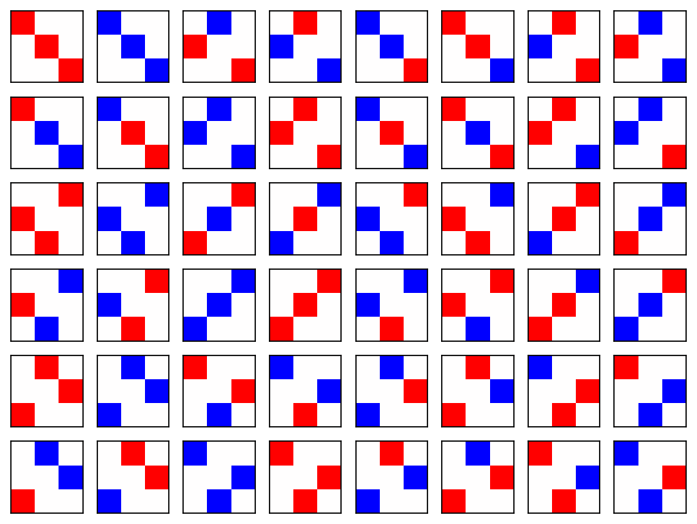
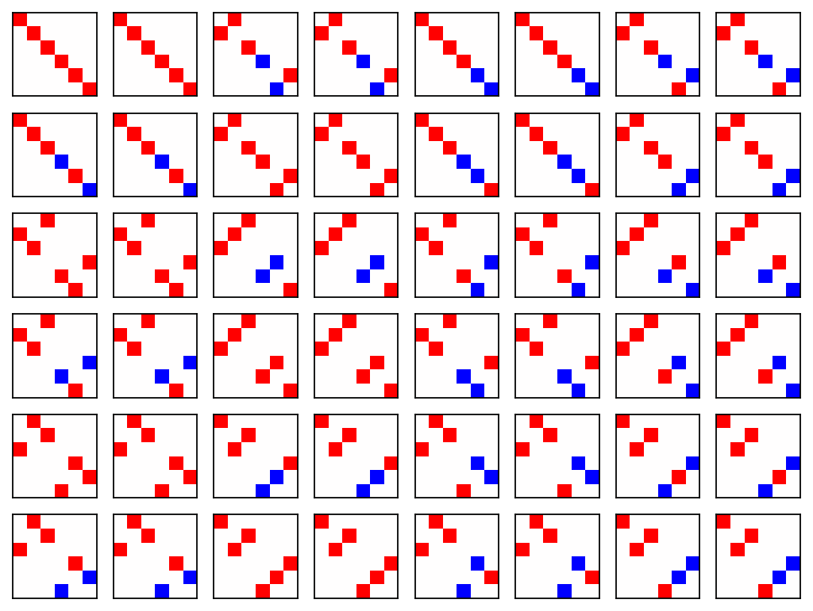

crystod (main command)#
The main command performs the SALC (symmetry-adapted linear combination)
analysis of crystal orbitals — no mode flag is needed. It also hosts the
interactive SALC viewer (--visualize) and the star-of-k display (--star-of-k).
Section 1 below summarizes the theoretical background on which every command
of this page (and of crystod-group / crystod-mag) is built.
1. Wigner D matrices and the projection operator (theoretical background)#
Example directory: example/01_wigner_d (testsuite section 1)
Note
This section is theoretical background, not a command-line mode: there is
no CLI flag for it. Everything described here is what CrystOD evaluates
internally every time one of the commands is executed; the machinery is exposed
through the Python API only (crystod.operations.wigner_D_real). No prior
familiarity with group theory is assumed.
1.1 What is a representation matrix?#
Take a symmetry operation of a crystal — say a 90-degree rotation about the z
axis, C4z (x -> y, y -> -x, z -> z). Apply it to the three p orbitals, which
have the same shapes as the functions x, y, z:
p_x -> p_y, p_y -> -p_x, p_z -> p_z.
Each orbital turns into a linear combination of the orbitals of the same
shell. Collecting the coefficients into a matrix gives the representation
matrix D(R) of the operation on that shell. For p orbitals it is simply the
3x3 rotation matrix itself:
D^(1)(C4z) = [ 0 -1 0 ] (basis order: x, y, z)
[ 1 0 0 ]
[ 0 0 1 ]
For d orbitals the same idea gives a 5x5 matrix. Under C4z:
xy -> -xy, yz -> -xz, z^2 -> z^2, xz -> yz, x^2-y^2 -> -(x^2-y^2), so
D^(2)(C4z) = [-1 0 0 0 0 ] (basis order: xy, yz, z^2, xz, x^2-y^2)
[ 0 0 0 -1 0 ]
[ 0 0 1 0 0 ]
[ 0 1 0 0 0 ]
[ 0 0 0 0 -1 ]
These matrices for the orbital shells (any l) are the Wigner D matrices
on real spherical harmonics. crystod.operations.wigner_D_real(l, R) returns
them for an arbitrary O(3) operation R (rotation, rotoinversion, or mirror):
import numpy as np
from crystod.operations import wigner_D_real
c4z = np.array([[0.0, -1.0, 0.0], [1.0, 0.0, 0.0], [0.0, 0.0, 1.0]])
wigner_D_real(1, c4z) # l = 1 (p): equals the 3x3 rotation matrix itself
wigner_D_real(2, c4z) # l = 2 (d): the 5x5 matrix above
np.trace(wigner_D_real(2, c4z)) # character of C4z on the d shell: -1
wigner_D_real(3, -np.eye(3)) # inversion: (-1)^l x identity (parity), here -1 x 1(7)
Key properties (verified in testsuite section 1):
for proper rotations at
l= 1 the matrix equalsRitself;inversion is represented by
(-1)^ltimes the identity — even shells (s, d, …) are unchanged, odd shells (p, f, …) flip sign (the parity of the orbital);the map is a group homomorphism,
D(AB) = D(A) D(B)— performing two operations in sequence is the same as multiplying their matrices;all matrices are orthogonal,
D D^T = 1.
1.2 How CrystOD computes D for any l#
Rotation matrices act directly on (x, y, z), so l = 1 is trivial — but how do
we get the 5x5, 7x7, … matrices for d, f, … shells without working out every
monomial by hand? CrystOD follows the classic quantum-mechanics route
(prototyped in matsym/wigner_d.ipynb by Hiroki Koiso):
Split off the inversion. Any O(3) operation is a proper rotation times (possibly) the inversion:
R = det(R) x R_proper. Work with the proper rotationR_proper = det(R) Rfirst.Convert the rotation to Euler angles (alpha, beta, gamma) in the ZYZ convention.
Evaluate Wigner’s formula for the complex D matrix
D^(l)(alpha, beta, gamma)— the standard result for how the complex spherical harmonicsY_l^m(m = -l..l) transform under rotations. This works for any l.Change basis from complex to real orbitals. The real orbitals are fixed linear combinations of
Y_l^m(e.g.p_x = (Y_1^-1 - Y_1^1)/sqrt(2)), so a unitary matrixCconverts the complex D matrix to the real-orbital one:D_real = C D_complex C^-1.Restore the parity. If the original operation was improper (
det(R) = -1), multiply by the inversion eigenvalue(-1)^l.
The production implementation in crystod/operations.py performs these steps
in pure NumPy (no symbolic algebra), with the orbital ordering
p: (x, y, z) / d: (xy, yz, z^2, xz, x^2-y^2) / f: (7 components).
1.3 From matrices to irreps: characters and the reduction formula#
The trace of a representation matrix, chi(R) = tr D(R), is called the
character of the operation. Characters are the workhorse of applied group
theory because they do not depend on the basis choice, and because tabulated
character tables list the characters chi_Gamma(R) of each irreducible
representation (irrep) Gamma — the elementary building blocks into which any
representation decomposes. The number of times an irrep appears is given by the
reduction formula
n_Gamma = (1/|G|) * sum_g chi_Gamma(g)* chi(g),
an average over all |G| operations of the group. This is exactly how the
ligand-field splitting works (section 9): the characters of the d shell in the
m-3m field, chi(g) = tr D^(2)(g), reduce to Eg + T2g — the familiar
two-below-three splitting of d orbitals in an octahedral crystal field.
In a crystal, a space-group operation g = {R | t} does two things to an
atomic orbital: it moves the atom to a symmetry-equivalent site, and it mixes
the orbital components on that site with D^(l)(R). The character of the
crystal-orbital representation at a k point is therefore the trace of
D^(l)(R) summed over the atoms that g maps onto themselves (modulo a
lattice translation), weighted by the Bloch phase exp(-ik.t) of that
translation. Reducing these characters against the little-group irrep table
gives the irrep content printed by sections 2-3.
1.4 From irreps to basis functions: the projection operator#
Knowing how many times an irrep appears is half the story; the other half is what the symmetry-adapted functions look like. They are extracted with the projection operator
P^(Gamma) = (d_Gamma/|G|) * sum_g chi_Gamma(g)* O(g),
where O(g) is the representation matrix of g on some convenient trial basis
and d_Gamma is the irrep dimension. Applied to a trial function, P^(Gamma)
kills every component except the part transforming as Gamma.
The workflow — prototyped in matsym/get_basis_functions.ipynb by Hiroki
Koiso — is the engine of crystod-group --basis / --generate-basis
(sections 10-11):
get the symmetry operations from spglib and the irreps from spgrep;
build the representation matrices
O(g)of the trial basis — for the linear monomials (x, y, z) these are the rotation matrices themselves; for the quadratic monomials (x^2, y^2, z^2, xy, yz, zx) a 6x6 matrix follows from substituting the rotated coordinates into each monomial, and so on;project with
P^(Gamma)(spgrep’sproject_to_irrep) and read off the symmetry-adapted polynomials — e.g. in m-3m the quadratic monomials separate intox^2+y^2+z^2(A1g),(2z^2-x^2-y^2, x^2-y^2)(Eg), and(xy, yz, zx)(T2g).
It is worth looking at the matrices of step 2 before projecting. The two
galleries below (regenerated from the notebook by
doc/make_rep_matrix_figures.py) show O(g) for all 48 operations of the
Pm-3m point group of ScF3 at the Gamma point — one small panel per operation,
with red = +1, blue = -1, white = 0.
{kind=link}

The 48 representation matrices on the linear basis (x, y, z) — i.e. the 3x3 rotation matrices themselves. Red = +1, blue = -1, white = 0.#
Two things are immediately visible. First, every panel has exactly one colored cell per row and per column: for a high-symmetry (cubic) group the operations do nothing more exotic than permute the basis functions and flip signs — these are signed permutation matrices (the first panel, the identity, is the plain red diagonal). Second, no single monomial stays put in every panel, which is the visual way of saying that x, y, z individually are not symmetry-adapted: they mix, and only the projection operator can disentangle the combinations that transform cleanly.
{kind=link}

The same 48 operations on the quadratic basis (x^2, y^2, z^2, xy, yz, zx) — now 6x6 signed permutation matrices.#
The quadratic gallery shows one more feature: a block structure. The
upper-left 3x3 block (x^2, y^2, z^2) and the lower-right 3x3 block
(xy, yz, zx) never mix — a rotation can turn x^2 into y^2, or xy into -yz, but
never a square into a product. Note also that the squares block is always
red: a square can never acquire a minus sign, which is why the totally
symmetric average x^2+y^2+z^2 (A1g) survives. The projection operator is
nothing but a weighted average of these 48 panels — multiply each panel by the
irrep character chi_Gamma(g)* and sum — and the block structure you see here
is exactly what reappears in the result: the squares block yields
A1g + Eg, the products block yields T2g, reproducing step 3 above (and the
crystod-group --generate-basis --order 2 output of section 11).
The SALCs of the main command (section 5) come from the same projection with
the trial basis replaced by the atomic orbitals on all symmetry-equivalent
sites — O(g) then combines the site permutation, the Bloch phases, and
D^(l)(R) from section 1.2. And replacing D^(1)(R) = R by the axial-vector
representation det(R) R (magnetic moments do not flip under inversion) turns
the same machinery into the spin-multipole bases of crystod-mag (section 28).
Further reading: B. Souvignier, “Representations of crystallographic groups”
(MaThCryst summer school notes, Nancy 2010);
the spgrep documentation, e.g. the
symmetry-adapted tensor example.
Run python demo_wigner_d.py in example/01_wigner_d for a printed walk-through.
2. Irreps of SALC for a selected element and orbital#
Example directory: example/02_salc (testsuite section 2)
Decompose the crystal orbitals built from a selected element/orbital into the irreducible representations of the little group at each special k point:
crystod -c example/test_POSCARs/221_PPOSCAR_SrTiO3 --element Ti --orbital d
Spinor example with irrep table:
crystod -c example/test_POSCARs/221_PPOSCAR_SrTiO3 --element Ti --orbital d \
--spinor --kpoint 0 0 0 --show-irrep-table
When --kpoint is omitted, all special k points of the space group are analyzed.
Any arm of a special-point star is labeled correctly (since v0.3.1).
3. Hybridization analysis#
Example directory: example/02_salc (testsuite section 3)
Analyze the hybridization between selected atomic orbitals (ELEMENT_ORBITAL pairs):
crystod -c example/test_POSCARs/221_PPOSCAR_SrTiO3 --atomic-orbital Ti_d O_p --kpoint 0 0 0
4. Star of k#
Example directory: example/04_star_of_k (testsuite section 4)
Display the star of k: the set of inequivalent k points generated from a given
k point by the space-group rotations (k' = k R, modulo reciprocal lattice):
crystod --star-of-k -c example/test_POSCARs/221_PPOSCAR_ScF3 --kpoint 0.5 0.5 0
crystod --star-of-k -c example/test_POSCARs/221_PPOSCAR_ScF3 --kpoint M
The output shows |G|, the little co-group order |G_k|, |star of k|, and each
arm with its coset-representative operation in Seitz notation.
The star of q is also displayed automatically in crystod-phonon --modulation
for each selected q point, which is useful when combining arms of the same star
in multi-q modulations.
5. SALC basis visualization (--visualize)#
Example directory: example/05_visualized_basis (testsuite section 5)
Build the SALCs of a selected element/orbital at a k point, print the irreducible decomposition and per-atom SALC coefficients, and export an interactive 3D HTML visualization:
crystod -c example/test_POSCARs/221_PPOSCAR_ScF3 --element F --orbital p --kpoint 0 0 0 --visualize
crystod -c example/test_POSCARs/221_PPOSCAR_ScF3 --element Sc --orbital d --kpoint 0 0 0 --real-coefficient --visualize
crystod -c example/test_POSCARs/221_PPOSCAR_ScF3 --element F --orbital p --kpoint GM --output SALC_F-p_GM.html --visualize
The irreducible decomposition is consistent with the plain SALC analysis
(e.g. 2.0 [GM4-(3)] + 1.0 [GM5-(3)] for F_p at GM in Pm-3m ScF3).
--kpoint accepts either three primitive reciprocal coordinates or a
high-symmetry label such as GM, X, M, or R. For k != 0, the commensurate
supercell is built automatically and the Bloch phase factor is applied to the
displayed coefficients.
The HTML file is always written, auto-named SALC_{element}_{orbital}_{kpoint}.html
(--output overrides the path). It is a standalone interactive viewer (plotly via
CDN): a sidebar shows the structure summary, the irreducible decomposition, and a
clickable table of all SALC basis vectors (mode space / irrep / component); the
main viewport shows the orbital lobes at each atom, colored by sign in the VESTA
convention (positive = yellow, negative = blue) and rendered opaque with
VESTA-like lighting by default, so the front/back occlusion of overlapping lobes
is always correct. The lobe-opacity slider switches to a translucent view, where
a distance-based fade keeps near/far lobes distinguishable. Cell/atom display
controls and a camera-synchronized a/b/c compass (a red, b green, c blue;
with --conventional it shows both lattices — the primitive vectors as short
pastel arrows labeled a_prim/b_prim/c_prim and the conventional vectors
of the displayed cell as full-color arrows labeled a_conv/b_conv/c_conv)
sit in
the sidebar and the lower-left corner.
The viewer layout is modeled after the phonon website by Henrique Miranda (github.com/henriquemiranda/phononwebsite, BSD-3-Clause) — CrystOD imitates its sidebar-plus-viewport design (no code is copied; the 3D rendering uses plotly).
Further options:
--mode-index Nrestricts the output to one irrep-grouped mode space (1-based).--conventionaldisplays the SALC in the conventional cell instead of the primitive cell (the primitive-to-conventional matrix is derived from the detected centring, exactly as incrystod-phonon --vector; file names get a_convsuffix, and for k != 0 the conventional cell is multiplied until the Bloch phase is commensurate).--bond EL1 EL2 MAX(repeatable, e.g.crystod --visualize -c 221_PPOSCAR_ScF3 --element F --orbital p --kpoint 1/2 1/2 1/2 --real-coefficient --bond Sc F 2.3) draws bonds between the two elements up to MAX Angstroms and renders the coordination polyhedra around the EL1 atoms as translucent convex hulls, as in VESTA’s Polyhedral style; atoms at the cell boundary are completed VESTA-style so the polyhedra are not cut off.
Example 1: Sc d orbitals of ScF3 at the R point#
crystod -c 221_PPOSCAR_ScF3 --element Sc --orbital d --kpoint R --visualize --real-coefficient --bond Sc F 2.5
The viewer below is the live output of that command — an R-point example, so
the commensurate 2x2x2 supercell is built and the Bloch phase alternates the
lobe signs from cell to cell (the Sc d SALCs at R decompose as
R3+(2) + R5+(3)). Click any row of the SALC table in the sidebar to switch
the displayed basis vector, toggle the ScF6 polyhedra, and drag to rotate:
Example 2: Ce f orbitals of CeO2 in the conventional cell (--conventional)#
crystod --visualize -c 225_PPOSCAR_CeO2 --element Ce --orbital f --kpoint 0 0 0 --bond Ce O 3 --real-coefficient --conventional
CeO2 is face-centred (Fm-3m), so its primitive cell is the small rhombohedral
one — hardly the picture one has in mind for fluorite. --conventional
switches the display to the cubic conventional cell (four formula units, the
familiar CeO8 cube arrangement) while the SALC coefficients themselves are
unchanged. The corner compass then shows both lattices: the primitive
vectors as short pastel arrows (aprim, bprim,
cprim — the face diagonals) and the conventional vectors of the
displayed cell as full-color arrows (aconv, bconv,
cconv — the cubic axes):
Open the CeO2 conventional-cell SALC viewer full-screen
--real-coefficientre-combines degenerate SALC components into real-coefficient form whenever the projected space is closed under complex conjugation (real-type irreps at k = -k points). For example, the GM3+ (Eg) SALCs of Sc_d, which are otherwise produced as(d_z2 +/- i d_x2-y2)/sqrt(2), becomed_z2andd_x2-y2. The spanned space is unchanged; only the unitary basis choice within the irrep space is rotated.